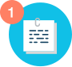

Nasıl Çalışır
Bazıları akademik yazı hizmetlerine ihtiyaçları olmadığını söyleyebilir, ancak bizim fiyatlarımızla herkesin ihtiyacı var. Çok uygun fiyatlarla her karmaşıklık seviyesinde yüksek kaliteli yazı hizmetleri sunuyoruz. İşte nasıl çalıştığımız:

Adım 1. Sipariş formunun doldurulması
Tek yapmanız gereken, bir yazarın en seçkin makaleyi oluşturmasına yardımcı olacağına inandığınız tüm ayrıntıları girmek ve bundan sonra ödemeye devam etmektir. İşlem sırasında biraz kafanız karışırsa, bir telefon talebinde bulunabilir veya canlı sohbet kullanabilirsiniz; destek temsilcilerimizden biri sizinle iletişime geçecek ve size rehberlik edecektir. Bizimle olan deneyiminizin olumlu olmasını sağlamak bizim önceliğimizdir.

Adım 2. Yazar seçimi
Tüm sipariş ayrıntılarını dikkatlice kontrol ettikten sonra, destek temsilcilerimiz ödeviniz için uygun bir yazar atayacaktır. Sipariş talimatlarında bir şeyler yanlış görünüyorsa ek ayrıntılar için sizinle iletişime geçmemiz gerekebileceğini unutmayın. Uzmanlarımızın kendi alanlarında tam eğitimli olduklarından ve yazar bulmanın sorun olmayacağından emin olabilirsiniz. Göreviniz için uygun uzmanı bulmak genellikle yalnızca 20 dakika sürer.

Adım 3. Araştırma ve yazma
Yazar atanır atanmaz, konuyla ilgili kendi araştırmalarını başlatır ve konuyla ilgili erişim sağladıkları materyalleri kullanırlar. İsterseniz, onlara yardımcı materyaller de sağlayabilirsiniz (bu isteğe bağlıdır, ancak en iyi sonucu elde etmek için müşterilerimizi bunu yapmaya teşvik ediyoruz).

Adım 4. Ürünün teslimi
Yazar bize makalenin tamamını sağladığı anda, bunu kişisel hesabınıza yükleyeceğiz ve siparişi aldığınızdan emin olmak için ekli dosyayla birlikte size bir e-posta göndereceğiz. Teslim tarihiniz hızla yaklaşıyorsa, siparişinizin tamamlandığını size bildirmek için sizi arayacağız.
Adım 5. Revizyon
Siparişin herhangi bir şekilde revize edilmesi gerektiğini düşünüyorsanız, bunun ne olduğunu, özellikle de değiştirmeniz gerektiğini bize bildirmekten memnuniyet duyarsınız ve gerisini biz hallederiz. Siparişte revize edilmiş bir şeye ihtiyacınız olduğu sürece, onu mükemmel hale getirmek için yardım etmeye fazlasıyla istekli olduğumuzu unutmayın. Olumlu deneyiminiz bizim önceliğimizdir.